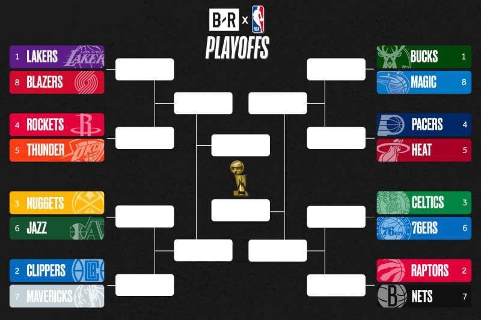

La National Basketball Association, comunemente nota come NBA, è una lega di basket professionistica del Nord America. La lega è composta da 30 squadre (29 negli Stati Uniti e 1 in Canada) ed è una delle principali leghe sportive professionistiche negli Stati Uniti e in Canada. È il campionato di basket professionistico maschile più importante del mondo.
Venne fondata a New York il 6 giugno 1946 come Basketball Association of America (BAA). Il 3 agosto 1949 la lega adottò il nome di National Basketball Association a seguito della sua fusione con la lega rivale National Basketball League. Nel 1976, l'NBA e l'American Basketball Association (ABA) si fusero , aggiungendo quattro franchigie all'NBA. La stagione regolare della NBA va da ottobre ad aprile, con ogni squadra che gioca 82 partite. Il torneo playoff della lega si estende fino a giugno. A partire dal 2020, i giocatori NBA sono gli atleti più pagati al mondo per stipendio medio annuo per giocatore.
Il quartier generale della NBA si trovava, e si trova ancora oggi, nella Olympic Tower al 645 della Fifth Avenue a New York. La NBA Entertainment e gli studi della NBA TV sono ubicati invece a Secaucus, New Jersey. Il suo logo, icona nota in tutto il mondo, fu disegnato da Alan Siegel e rappresenta la silhouette di Jerry West mentre, in una posizione atletica, effettua una penetrazione. Il logo è rimasto invariato dal 1971.
Regular season
La regular season della NBA inizia nell'ultima settimana del mese di ottobre, dopo che le squadre hanno affrontato tra metà settembre e metà ottobre il training camp e la pre-season. Durante il training camp gli allenatori delle squadre possono valutare i rookie, preparare i giocatori alla rigorosa e lunga regular season, e scegliere la rosa dei 12 giocatori con cui iniziare a giocare, e i 3 giocatori da inserire nella lista degli inattivi. Inoltre le squadre hanno la possibilità di assegnare giocatori con meno di due anni di esperienza NBA alla propria squadra affiliata nella NBA G League. Concluso il training camp, le squadre sostengono 7 partite di esibizione contro altre squadre della lega. Concluse anche le partite di pre-season, inizia il campionato. Ogni squadra gioca un totale, diviso tra partite in casa e trasferta, di 82 partite.
A febbraio la lega celebra l'annuale NBA All-Star Game, evento che si sviluppa in un intero week-end (NBA All-Star Weekend). È questo uno dei più grandi eventi organizzati dalla lega durante la stagione regolare, ed è anche un'occasione per concedere una pausa ai giocatori che non partecipano all'evento e rappresenta per le dirigenze delle squadre l'ultima opportunità di scambiare giocatori sul mercato, visto che la scadenza per le contrattazioni viene fissata in genere subito dopo la fine dell'All-Star Weekend.
Alla metà del mese di aprile la stagione regolare finisce e cominciano le votazioni per i riconoscimenti annuali a giocatori, allenatori e general manager. Ma dopo una settimana di riposo cominciano i Playoff NBA, che decreteranno i due contendenti al titolo NBA.
NBA Playoff & NBA Finals

I playoff della NBA iniziano a cavallo tra i mesi di aprile e maggio, e vedono scontrarsi le prime 8 squadre di ogni conference (east/west coast). In base alla posizione in classifica, e quindi al bilancio di vittorie e sconfitte nella stagione regolare, le squadre con il miglior bottino rispetto alle avversarie hanno il privilegio di disputare le prime due partite della serie in casa, come anche le eventuali gara 5 e gara 7 che possono essere le gare chiave per chiudere una serie al meglio delle sette (quattro successi per vincere la serie). Dalla stagione 2006-2007, ai campioni di division e alla miglior seconda delle division, vengono assegnati i primi 4 posti in classifica nella conference e i restanti 4 sono stabiliti in base al numero di vittorie e di sconfitte a prescindere dalla posizione nelle division.
Al primo round la 1ª classificata di ogni conference affronta l'8a, la 2a la 7a, la 3a la 6a e la 4a la 5a; le vincenti delle serie accedono al secondo round, fino ad arrivare alle NBA Conference Finals, che decretano i campioni delle rispettive conference e le due squadre che si vedranno opposte alle finali per il titolo.
Le finali NBA sono l'evento conclusivo della stagione NBA giocata. I campioni della Eastern Conference e della Western Conference si affrontano in una serie finale sempre al meglio delle sette partite. Nelle finali NBA la squadra che ha il miglior record disputerà in casa le prime due gare, come anche le eventuali gara 5 e gara 7 decisive per vincere il titolo.
Alla fine della serie finale la squadra vincente diventa campione NBA, e le viene assegnato il Larry O'Brien Championship Trophy, il trofeo NBA, e il miglior giocatore della serie finale conquista il premio di MVP (Most Valuable Player) delle Finals, il Bill Russell Trophy.
Squadre più titolate
Delle 30 squadre NBA, sono 19 vantano almeno Larry O'Brien Trophy in bacheca: